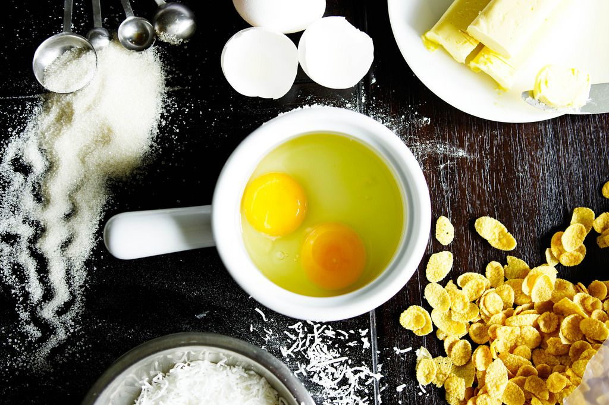

Zutatenliste
- 1 1/2 Tassen Allzweckmehl
- 1/2 Teelöffel Natron
- 1/4 Teelöffel Salz
- 1/2 Tasse ungesalzene Butter, weich
- 1/2 Tasse Kristallzucker
- 1/2 Tasse hellbrauner Zucker, verpackt
- 1 großes Ei
- 1 Teelöffel Vanilleextrakt
- 1 Tasse weiße Schokoladenstückchen oder -stückchen
- 3/4 Tasse frische oder gefrorene Himbeeren
